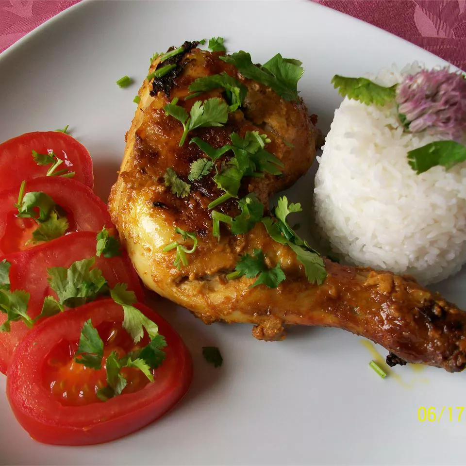

Indian Tandoori Chicken

Description
This is an authentic recipe for Tandoori chicken. Serve with long grain Basmati rice, cucumber salad, grilled veggies, roasted corn on the cob and finish off the meal with Kulfi (Indian ice cream).
Ingredients
- 2 pounds of chicken, cut into pieces
- 1 teaspoon of salt
- 1 juiced lemon
- 1 ¼ cups plain yogurt
- ½ onion, finely chopped
- 1 clove of minced garlic
- 1 teaspoon of fresh ginger root, grated
- 2 teaspoons of garam masala
- 1 teaspoon of cayenne pepper
- 1 teaspoon of yellow food coloring
- 1 teaspoon of red food coloring
- 2 teaspoons of finely chopped cilantro
- 1 lemon, cut into wedges
Steps
- Remove skin from chicken pieces, and cut slits into them lengthwise. Place in a shallow dish. Sprinkle both sides of chicken with salt and lemon juice. Set aside 20 minutes.
- In a medium bowl, combine yogurt, onion, garlic, ginger, garam masala, and cayenne pepper. Mix until smooth. Stir in yellow and red food coloring. Spread yogurt mixture over chicken. Cover, and refrigerate for 6 to 24 hours (the longer the better).
- Preheat an outdoor grill for medium high heat, and lightly oil grate.
- Cook chicken on grill until no longer pink and juices run clear. Garnish with cilantro and lemon wedges.